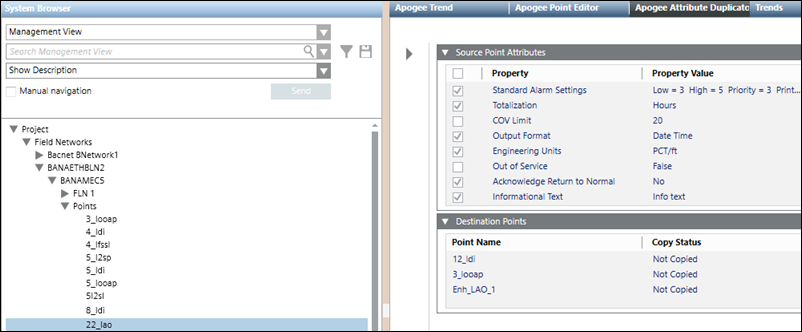

APOGEE Attribute Duplicator
This section contains general reference information about the APOGEE Attribute Duplicator. For related procedures, see the step-by-step section.

Attribute Duplicator allows you to copy the properties of a point to another point or group of points, which makes the task of setting up point databases faster and easier. For example, you can copy the “Not Alarmable” property from a single point to hundreds of other points without editing each point individually in Point Editor. Points from both APOGEE BACnet and APOGEE P2 panels can be dragged to the Destination Points expander to have properties copied to them.
After copying the properties, you can view the Copy Log, which shows start and end times, duration of the copy, total points selected for copying, and the copy success and failure for the points.
NOTE: Not all points have the same properties. Consequently, some properties cannot be copied to the destination point(s). In that case, the log displays a “copy not possible” message for each affected property within a point.